O guardião
Parente ou amigo que age por você na hora. Recebe o alarme, segue o passo a passo e bloqueia contas e linha.
O Ampara avisa quem pode bloquear suas contas e sua linha. Ele não bloqueia o celular.
60 segundos para o guardião dizer “Estou ciente”. Sem resposta, o alarme passa para o próximo, até três.
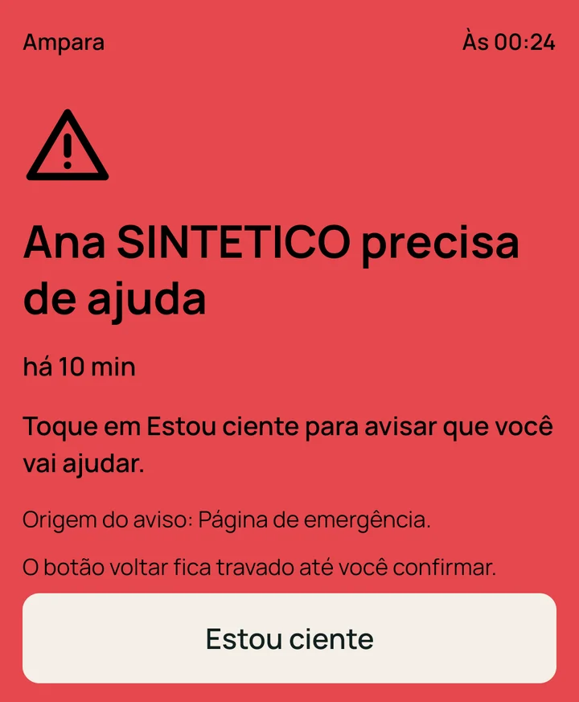
Tela do guardião no app, em emulador Android, com dados sintéticos.
Aperte o botão do chaveiro e veja o que o guardião vê. O alarme só para com um “Estou ciente”. Sem ele em 60 segundos, passa para o próximo.
Toque no botão verde do chaveiro.
Tudo aqui é demonstração, com nomes inventados. O tempo é o real; “Acelerar” corre 6 vezes mais depressa.
60segundos para Marina dizer “Estou ciente”.
Marina assumiu o alarme. A escada parou. Agora cada passo que ela marcar aparece aqui, carimbado, para os outros guardiões.
Nenhum passo marcado ainda. Role o celular e toque em “Marcar como feito”.
Os três guardiões ficaram sem resposta. Nesta demonstração o ciclo para aqui.
Desenho do chaveiro (ESP32): um botão e uma luz. Ainda não há foto do protótipo.
Celular do guardião 1: Marina
Nenhum alerta até agora.
Quando o chaveiro de Ana for apertado, o alarme toca aqui, mesmo com a tela apagada.
Rota
Rota ligada: o Ampara guarda os últimos 7 dias, só para você.
Viu algo na rua?
Conte em poucas palavras o que e onde, sem descrever pessoas. Ajuda quem passa por perto.
Chaveiro · 00:00
Siga na ordem que fizer sentido. Cada passo feito fica marcado para os outros guardiões.
0 de 5 feitos
Esta demonstração precisa de JavaScript. Na tela real, o alarme é vermelho de ponta a ponta e só para com “Estou ciente”.
É a janela em que a vítima está em choque a caminho de casa. É nela que os criminosos entram no banco e nas contas.
Um amigo teve o celular roubado no trem da Linha 9, com o aparelho ainda sendo pago. Uma mãe, num quebra-vidro, não lembrou das senhas, e os criminosos entraram no banco. Os dois só agiram ao chegar ao destino.

Cada passo mostra o que roda hoje e o que ainda está em construção, com a captura que prova. Telas em retrato são do app. Fotos em preto e branco mostram o lugar.
O app guarda o IMEI, os bancos, a operadora, até 3 guardiões e a rota dos últimos 7 dias, só para você.
Roda hoje no app, em emulador Android.
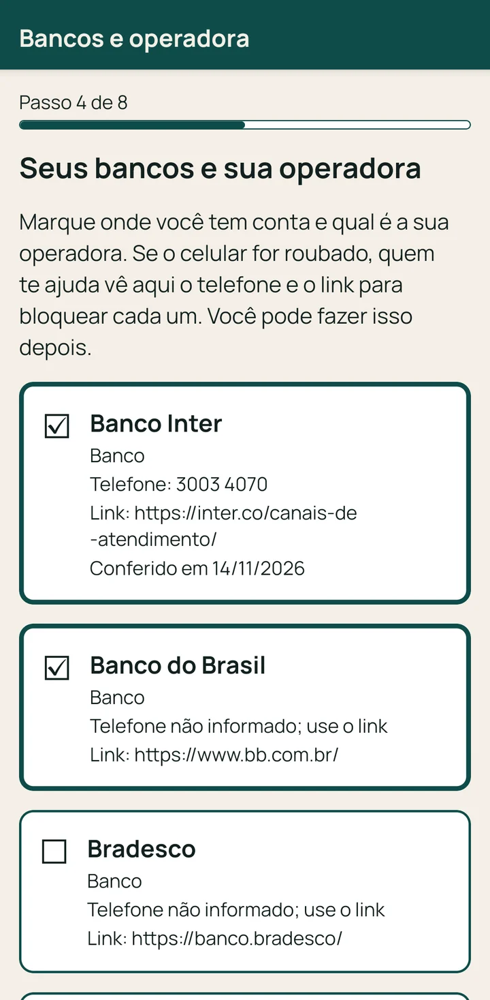
O chaveiro manda um evento por MQTT. Outra opção é digitar um código de emergência em outro aparelho. No app, a vítima pareia o chaveiro lendo o QR ou digitando o código.
Em construção: o chaveiro está no repositório do Vitor. O ciclo até a API foi provado por script, com broker MQTT público.
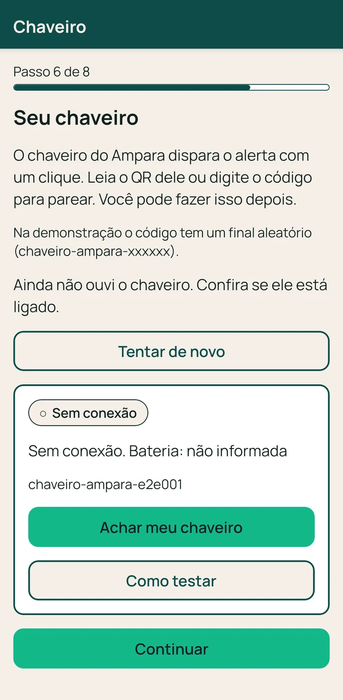
Mesmo que o evento chegue cinco vezes, e responde ao chaveiro com um ack.
Roda hoje: 480 testes e 14 ataques simulados passando em 15/11.
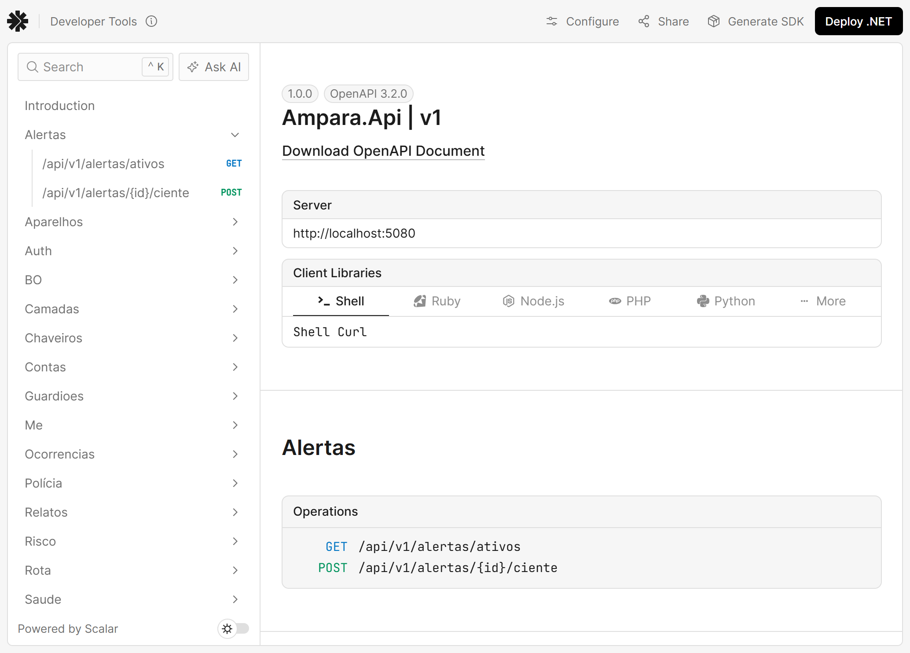
Alarme insistente, em tela cheia, com sirene e vibração até o “Estou ciente”. Sem ele em 60 segundos, a API escala ao próximo guardião.
Roda hoje no app, com dados sintéticos. Simule no topo da página.
Banco, Celular Seguro, operadora, senhas e BO. Cada passo feito ganha o horário e fica visível para os outros guardiões.
Roda hoje no app. Veja os carimbos na simulação.
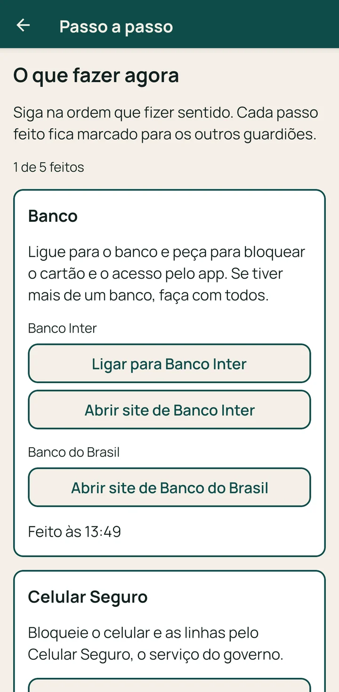
A vítima abre a página de emergência no aparelho de um parente, marca na rota onde e quando foi roubada, e a API gera o texto com local, hora, IMEI e a delegacia mais próxima.
Roda hoje: página de emergência com 69 testes passando em 16/11.
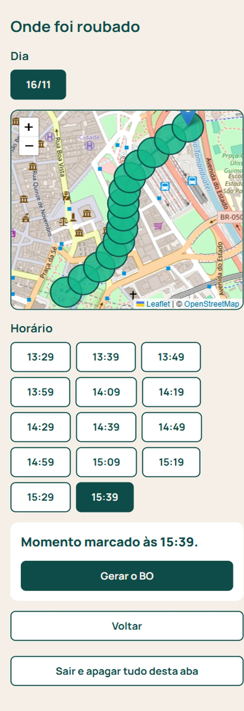
Com consentimento, a Ponte recebe área de cerca de 500 m, hora e tipo. Sem CPF, nome nem IMEI. O andamento volta ao cidadão.
Roda hoje: 225 testes na evidência de 14/11.
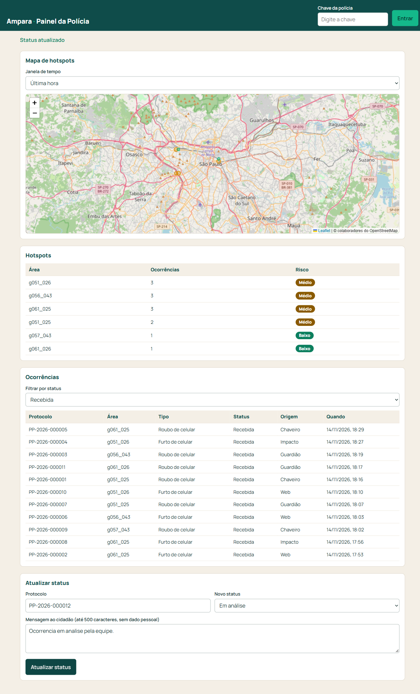
Risco por área e horário, a partir de dados da SSP-SP, mais relatos das últimas 2 horas com proteção contra abuso.
Em construção: o mapa do app já existe; o modelo de risco ainda não foi treinado.
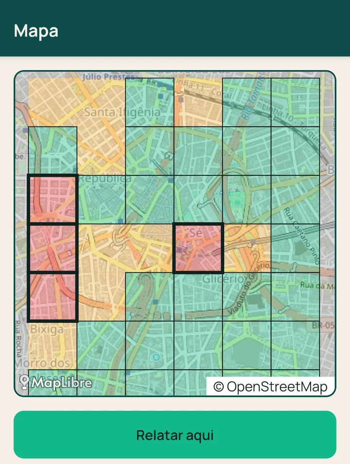
6 partes rodam, 4 estão em construção e nenhuma ficou só no papel. Conferido em 16/11/2026, lendo o repositório. “Roda” quer dizer que roda na máquina de desenvolvimento, não que está publicado.
| Parte | Estado | O que há |
|---|---|---|
| API Ampara, C# e .NET 11 | Roda | Rotas, tempo real e escuta do chaveiro por MQTT. Em 15/11: 480 testes e 14 ataques simulados, 0 falhas. |
| App do cidadão e do guardião, Expo | Roda | Cadastro, guardiões, alarme, passo a passo, rota, BO, mapa e relato, no emulador Android. Prints reais nesta página. |
| Página de emergência | Roda | Entrar por outro aparelho, pedir ajuda, marcar a rota e gerar o BO. Em 16/11: 69 testes passando. |
| Painel Risco Cidadão | Roda | Farol de 0 a 100, visão executiva e simulador de ataque. |
| Ponte Polícia, Python e FastAPI | Roda | Recebe ocorrências sem dado pessoal. Evidência de 14/11: 225 testes. |
| Motor PII e taint | Roda | Precisão e recall de 100% no corpus sintético de 387 linhas. Mede regressão. |
| Chaveiro, ESP32 | No repositório | Sketch, diagrama e contrato MQTT prontos. Link do Wokwi e vídeo ainda vazios. A descrição do README do submódulo está antiga: o Ampara não bloqueia o celular. |
| Modelo de risco, ML | Em construção | Carga e limpeza da base da SSP, painel por área, período, dia e faixa com divisão temporal, e features de clima, GeoSampa, população e iluminação. 68 funções de teste. Sem modelo treinado ainda. |
| VM Linux | Parcial | Spike montado, com scripts de execução e verificação. Não há evidência versionada de que passou. |
| Qualidade, QA | Em preparo | Roteiro e verificação da fundação. A matriz de casos de teste ainda está por preencher. |
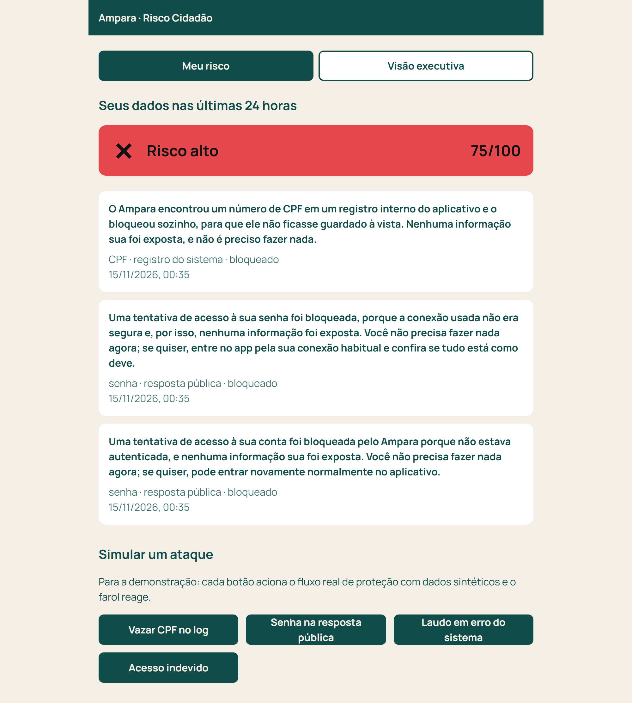
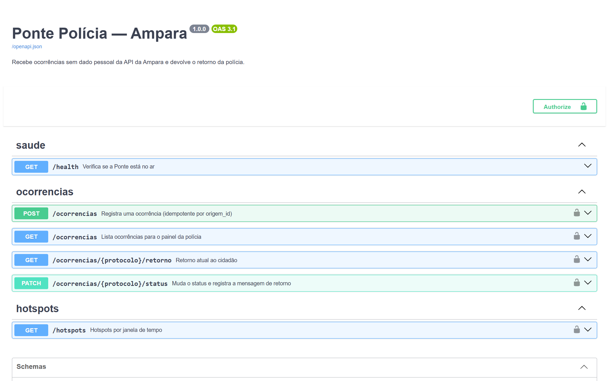
Cada linha aponta para o ataque automatizado ou para o arquivo que a sustenta. Os limites também estão listados.
13ataques automatizados na suíte de segurança.
Precisão e recall de 100% medem regressão no corpus sintético. Não medem dado real.
Ninguém age sozinho na janela de 30 a 90 minutos. O Ampara junta quem pode.
Parente ou amigo que age por você na hora. Recebe o alarme, segue o passo a passo e bloqueia contas e linha.
Recebe a ocorrência mínima, vê os pontos quentes e devolve o andamento ao cidadão.
Quem anda com o celular em São Paulo: passageiro de trem e metrô, motorista parado no trânsito. No app, vê o chaveiro, a rota e o que relatar.
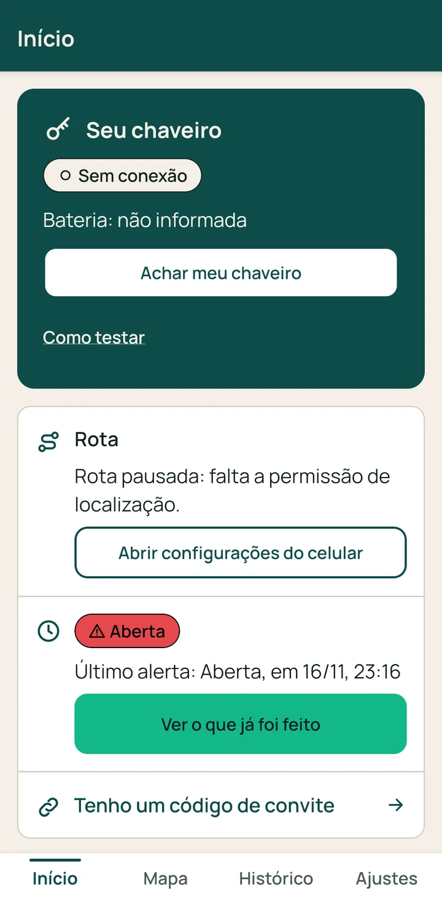
Todas as partes, menos o chaveiro.
Chaveiro ESP32 e simulação no Wokwi.
Claude foi o copiloto de código. Todos os prompts estão em prompts.md.
Objetivos de Desenvolvimento Sustentável: ODS 11, cidades e comunidades sustentáveis (metas 11.2 e 11.7); ODS 10, redução das desigualdades (meta 10.2); ODS 9, indústria, inovação e infraestrutura (meta 9.c); e ODS 16, paz, justiça e instituições eficazes (metas 16.1 e 16.6), este adicional, fora da lista do briefing.
Três serviços sobem em localhost, na máquina de quem apresenta, com dados sintéticos. Abra cada um e confira.